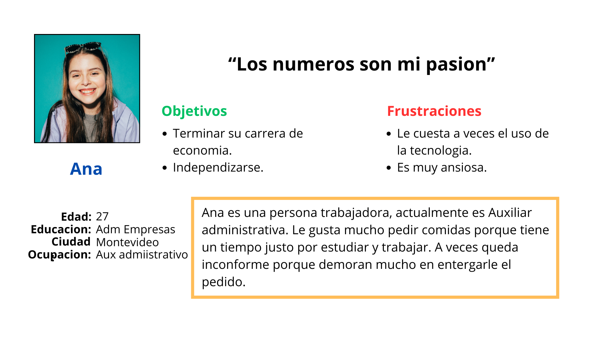
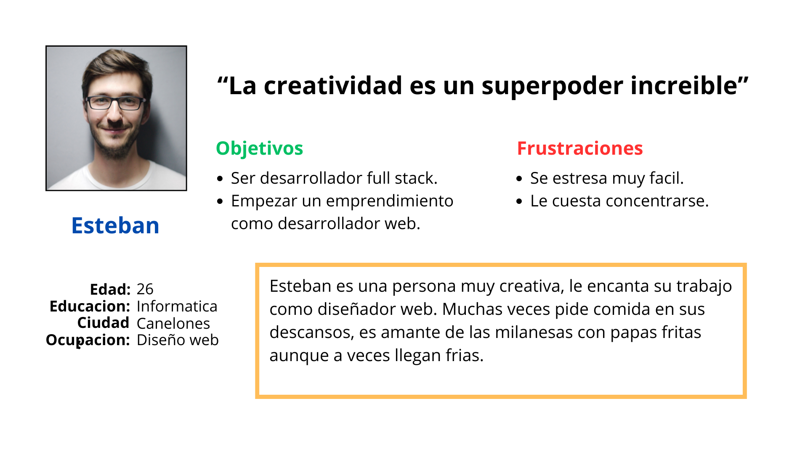

Este proyecto fue elegido del curso "Diseño de experiencias del usuario UX" de Google en coursera. En estre proyecto trabaje como investigador principal UX y desarrollador. Fui jefe de interfaz de usuario, centrandome en el diseño visual creando prototipos de baja y alta fidelidad con interaccion.
Publico objetivo: El público objetivo de una aplicación de restaurante para pedir comida online abarca diversos grupos, como profesionales con poco tiempo, jóvenes urbanos, familias ocupadas, estudiantes, turistas, personas mayores y amantes de la tecnología. Todos valoran la conveniencia de ordenar comida de calidad desde la comodidad de sus hogares o lugares de trabajo. La aplicación busca satisfacer estas necesidades ofreciendo una experiencia de compra rápida, fácil y personalizada, adaptada a diferentes estilos de vida y preferencias alimenticias.
Desafio: Crear una aplicación móvil para un restaurante que permita a los clientes realizar pedidos de comida online de manera rápida y conveniente.
Objetivo: Investigar las dificultades que puedan tener nuestros usuarios a la hora de realizar un pedido y también que sea intuitivo y adaptable para todos los usuarios.
Realicé entrevistas y creé mapas de empatía para entender a las nececidades de las personas. Un grupo de usuarios primario identificado a través de la investigación fueron los adultos trabajadores que no tienen tiempo para cocinar. Este grupo de usuarios confirmó las suposiciones iniciales sobre los clientes del restaurante, pero la investigación también reveló que también habían clientes habituales que les gustaría realizar pedidos para no tener que trasladarse.
Para esta investigacion se han realizado 5 entrevistas en las cuales Alex y Esteban se destacan.
Ana es auxiliar administrativa que actualmente esta realizando la licenciatura en economia. Ana tiene poco tiempo entre la facultad y su trabajo para prepararse su almuerzo por lo que prepara su comida el dia anterior o pide comida.
Esteban es un diseñador web que vive con su pareja y sus 2 gatos. Esteban pide con frecuencia comida ya que dispone de poco tiempo en su descanso para almorzar pero siempre llegan tarde.
Tomarse el tiempo para elaborar en papel iteraciones de cada pantalla de la aplicación garantizó que los elementos que llegaron a convertirse en esquemas de página digitales fueran los correctos para abordar las dificultades del usuario. Para la pantalla de inicio, prioricé un proceso de pedidos rápido y simple para evitar que los usuarios perdieran tiempo.
Se utilizaron estrellas para marcar los elementos de cada boceto que se usarían en los primeros esquemas de página digitales.
A medida que la fase inicial del diseño continuaba, me aseguré de realizar los diseños de las pantallas según los comentarios y los resultados de la investigación de usuarios.
Se incorporo una fuente serif sans para que sea mas visibles para personas con poca visibilidad.
Se usaron íconos para facilitar la navegación.
Se usaron imágenes detalladas de las comidas para ayudar a todos los usuarios a comprender mejor los diseños.
Para probar el prototipo